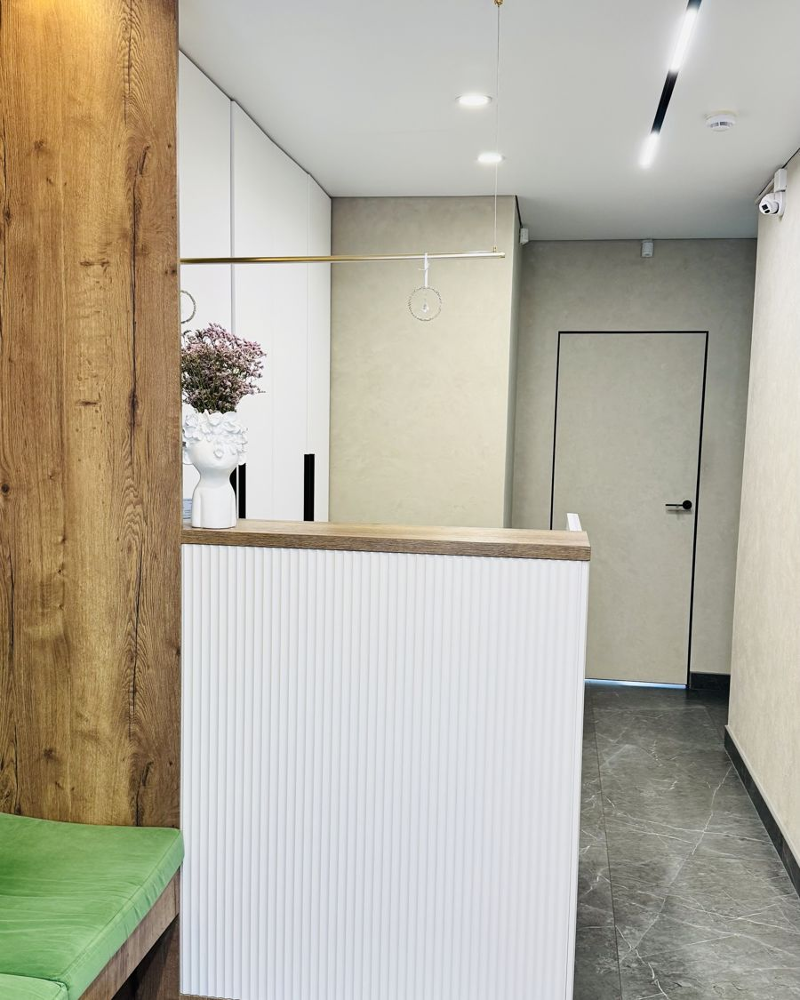

Новое: у Г2 появился переключатель — пять вариантов цвета. Г1 и Г2 — середина между А и В. Ниже для сравнения остались исходные А, Б, В.
На всех трёх один и тот же кусок главной: шапка, первый экран, направления, врач, цены, предупреждение. Логотипы — эскизы идеи, чистовой вектор делаем после выбора. Можно смешивать: например, цвета из А и шрифты из Б.
Фото — ресепшен клиники. Его цвета (дуб, тёплые серые стены, зелёная скамья, сиреневые цветы) легли в основу направлений А и В.
Основа от А: тёплый серо-бежевый и глубокий зелёный из интерьера, спокойные шрифты. Характер от В: логотип-палитра, четыре зуба-краски и четыре мягких цвета направлений. Цвета приглушены и взяты из той же комнаты: шалфей от скамьи, сирень от цветов, дуб, латунь.
Лечение, удаление и протезирование зубов. Работаем с 2012 года.

Lora — заголовки
Manrope — текст
Заголовки — Geologica. Ниже переключатель цвета: форма та же, меняются только краски. Попробуй все и смотри не на «нравится», а на то, что будет выглядеть спокойно и через год.
Лечение, удаление и протезирование зубов. Работаем с 2012 года.
Geologica — заголовки
Manrope — текст
Цвета интерьера: тёплый серо-бежевый, дуб, глубокий зелёный. Заголовки с засечками, текст — простой гротеск. Спокойно, по-взрослому, дорого без пафоса. Пациент узнает клинику, когда придёт.
Лечение, удаление и протезирование зубов. Работаем с 2012 года.
Lora — заголовки
Manrope — текст, кнопки, таблицы
Белый, мятный и бирюзовый, один современный гротеск на всё. Чисто, медицински, понятно с первого взгляда. Безопасный вариант, но похож на многие сайты клиник.
Лечение, удаление и протезирование зубов. Работаем с 2012 года.
Onest — всё
Один шрифт, разная толщина
Развиваем идею старого логотипа: палитра художника, а зубы — четыре краски. Тёплый молочный фон, графит и четыре мягких цвета, по одному на направление. Округлый современный шрифт в заголовках. Самое запоминающееся, дружелюбное, подходит для семей с детьми.
Лечение, удаление и протезирование зубов. Работаем с 2012 года.
Unbounded — заголовки
Golos Text — текст